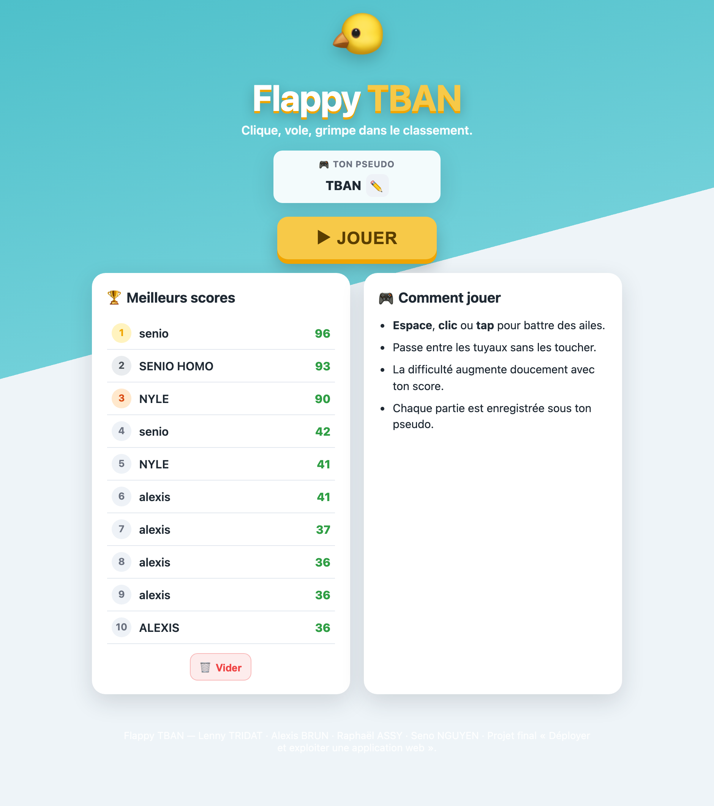
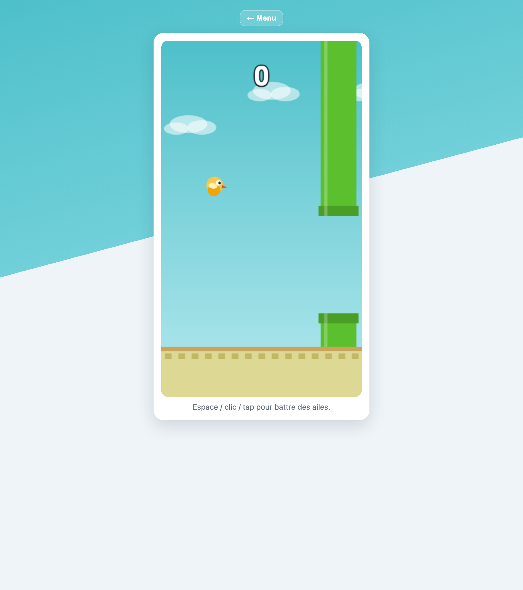
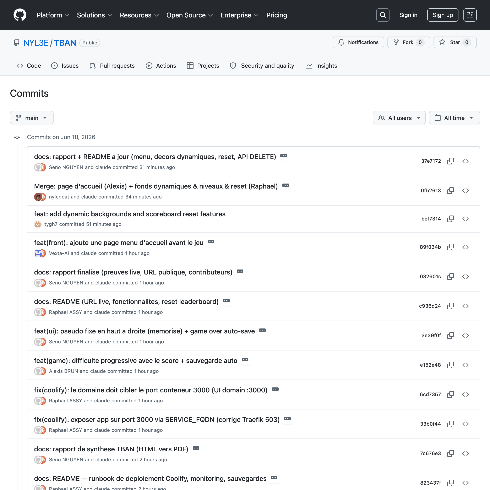
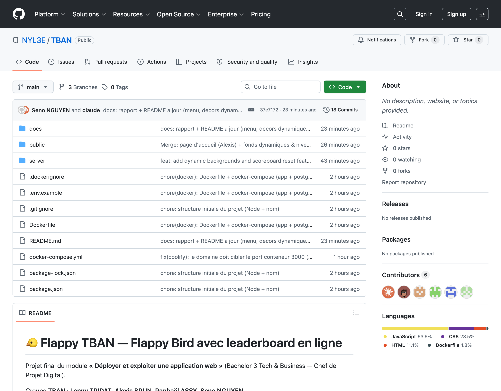
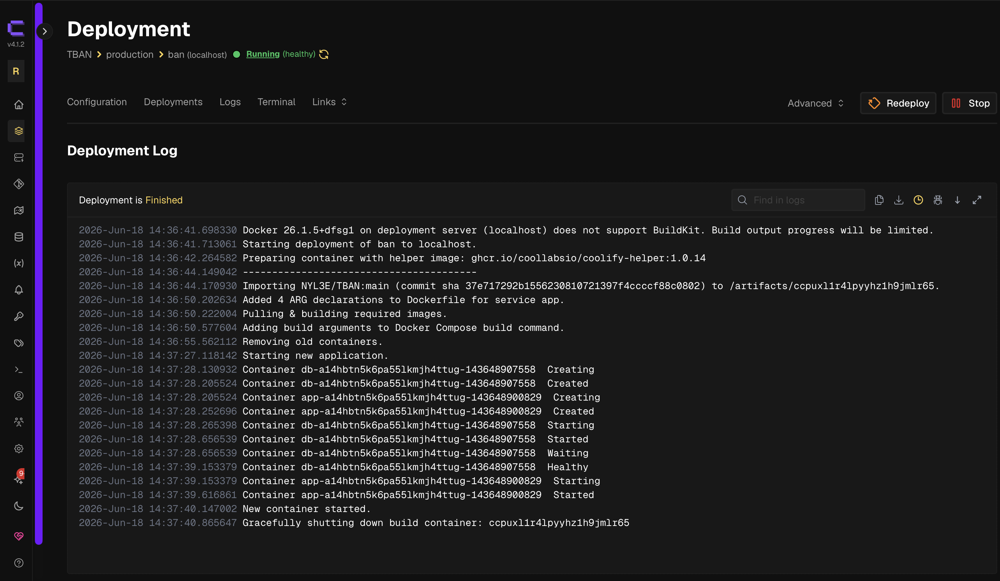
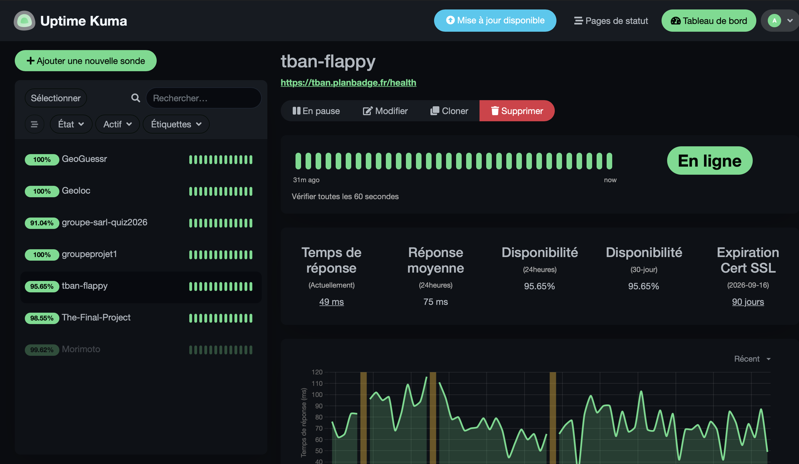

Flappy TBAN est un mini-jeu Flappy Bird jouable dans le navigateur, doublé d'un
leaderboard persistant : chaque joueur enregistre son score, stocké dans une base PostgreSQL et affiché
dans un classement « Top 10 ». L'objectif n'était pas de produire un jeu complexe, mais de démontrer la maîtrise du
cycle de vie complet d'une application : développement → versionnement Git → conteneurisation Docker → déploiement
Coolify → exploitation (monitoring, logs, mises à jour, sauvegardes, support). L'application est multi-conteneurs
(service Node.js + service PostgreSQL avec volume persistant) et expose une route de santé /health utilisée
par le Healthcheck Coolify et par Uptime Kuma.


| Objectif | Un jeu d'arcade simple et addictif avec une dimension compétitive : un classement en ligne partagé entre tous les joueurs. Le projet sert de support pour illustrer un déploiement et une exploitation réels. |
|---|---|
| Public visé | Tout public (joueurs occasionnels), sur ordinateur ou mobile — interface responsive jouable à la souris, au clavier (Espace) ou au tactile. |
| Fonctionnalités |
|
| Donnée métier persistée | Les scores des joueurs (table scores : pseudo, score, date). C'est la donnée qui doit survivre aux redémarrages et être sauvegardée. |
| Solution d'IA dans le produit | Non — aucune IA embarquée. L'IA a uniquement servi d'assistant de développement (voir Retour d'expérience). |
Code hébergé sur github.com/NYL3E/TBAN — dépôt public. Le développement a suivi un véritable workflow d'équipe : chaque membre a travaillé sur sa branche de fonctionnalité (page d'accueil, décors dynamiques) intégrée ensuite par Pull Request et merge. 18 commits, 3 branches, 6 contributeurs visibles.

main : on y voit les commits de tous les membres —
Seno NGUYEN, nylegoat (Lenny TRIDAT), Vexta-AI (Alexis BRUN), tygh7 / Raphaël ASSY — avec des messages à signification métier.
| Étudiant | Compte GitHub | Contributions principales |
|---|---|---|
| Lenny TRIDAT | NYL3E & nylegoat (propriétaire) | Backend Express & API /api/scores, intégration PostgreSQL, merge final. |
| Alexis BRUN | Vexta-AI | Moteur du jeu (canvas), physique/collisions, difficulté, écran d'accueil. |
| Raphaël ASSY | tygh7 | Docker, déploiement & routage Coolify, décors dynamiques + reset du classement. |
| Seno NGUYEN | senonguyen | UI / leaderboard, pseudo & sauvegarde auto, rapport. |
| Couche | Technologie | Rôle |
|---|---|---|
| Frontend | HTML / CSS / JavaScript vanilla (canvas 2D) | Le jeu + l'affichage du classement. Zéro dépendance front. |
| Backend | Node.js 20 + Express + pg | Sert les fichiers statiques et l'API REST des scores. |
| Base de données | PostgreSQL 16 | Persistance des scores : scores(id, name, score, created_at) + index. |
| Conteneurisation | Docker + Docker Compose | Deux services orchestrés, volume nommé pour la donnée. |
| Plateforme | Coolify (Traefik, Let's Encrypt) | Build, déploiement, HTTPS, healthcheck, logs. |
main.docker-compose.yml et construit les services app + db.POSTGRES_*, DATABASE_URL)./health → l'application passe en running:healthy.# Réponse HTTPS, certificat Let's Encrypt valide $ curl -sI https://tban.planbadge.fr/ -> HTTP/2 200 (cert TLS valide) # Route de santé : 200 + base de données joignable $ curl -s https://tban.planbadge.fr/health -> {"status":"ok","db":"up","uptime":...} # Leaderboard : la donnée métier est bien persistée en PostgreSQL $ curl -s https://tban.planbadge.fr/api/scores -> [{"name":"senio","score":96}, {"name":"NYLE","score":90}, ...]

NYL3E/TBAN:main terminé : conteneurs db et app démarrés,
statut Running (healthy), avec le journal de déploiement complet.| Difficulté | Solution retenue |
|---|---|
| Traefik « 503 no available server » au 1ᵉʳ déploiement : le domaine était routé vers le port 80 par défaut, alors que l'app écoute sur 3000. | Dans Coolify, le domaine doit cibler le port interne du conteneur : https://tban.planbadge.fr:3000. Résolution immédiate → app accessible + HTTPS émis. |
| La base met quelques secondes à démarrer ; l'app risquait de planter au boot. | L'app démarre quand même et retente la connexion ; /health renvoie 503 tant que la base n'est pas prête, puis 200. |
| Persistance de la donnée entre déploiements. | Volume nommé db_data monté sur /var/lib/postgresql/data (à ne jamais supprimer). |
| Fusionner le travail de chacun (branches divergentes). | Résolution des conflits Git en combinant page d'accueil, décors dynamiques et gameplay. |
Monitoring = savoir si le service fonctionne ; Alerting = prévenir quelqu'un quand il tombe. Trois niveaux :
| Dispositif | Configuration | Ce qu'il vérifie |
|---|---|---|
| Healthcheck Coolify | Path /health, port 3000, statut 200. | Interne : app et base répondent (SELECT 1). |
| Uptime Kuma | Monitor HTTP(s) sur l'URL publique, intervalle 60 s. | Externe : le service est réellement accessible « comme un utilisateur ». |
| Healthcheck Docker | Défini dans le Dockerfile et le compose. | Le conteneur se déclare sain/malsain à Docker. |

En cas d'incident : Uptime Kuma passe au rouge et peut notifier (e-mail, Discord, Telegram…). En entreprise, l'alerte irait à la personne d'astreinte.
Où : Coolify → application → onglet Logs (build + conteneur, sans SSH). Lignes types :
[server] Flappy TBAN à l'écoute sur le port 3000
[db] Connecté à PostgreSQL — table "scores" prête.
[api] Nouveau score enregistré : NYLE = 90
[health] Base de données injoignable : ... (symptôme : la base est tombée)
Utilité : confirmer un démarrage sain, tracer l'activité métier (un score enregistré), et diagnostiquer (la dernière ligne pointe une base injoignable). Pour retrouver le problème d'un utilisateur : heure exacte, URL, action, navigateur.
express, pg).healthy + test d'une partie + envoi d'un score + surveillance logs & Uptime Kuma.| Élément | Important ? | Sauvegardé ? | Commentaire |
|---|---|---|---|
| Base de données (scores) | Critique | Oui | La donnée la plus critique, impossible à reconstruire. Dump pg_dump + volume persistant. |
| Code source | Oui | Oui | GitHub (hors-site) + clones locaux des 4 membres. |
| Variables d'env / secrets | Oui | Partiel | Mot de passe PostgreSQL dans Coolify ; à conserver dans un gestionnaire de secrets. |
| Config Coolify | Oui | À documenter | Reproductible via le compose + README, mais à exporter/noter. |
| Nom de domaine / DNS | Oui | Registrar | Géré hors serveur ; sa perte = URL indisponible. |
| Certificats HTTPS | Faible | Auto | Régénérés automatiquement (Let's Encrypt). |
| Règle | Mise en œuvre pour notre base |
|---|---|
| 3 copies | (1) la base en production (volume db_data) · (2) un dump pg_dump · (3) une copie du dump dans un stockage cloud. |
| 2 supports | Le volume sur le serveur Coolify + un stockage objet / disque distinct pour les dumps. |
| 1 hors site | Le dump copié dans un cloud (≠ serveur de prod) — résiste à la perte totale du VPS. |
$ docker compose exec db pg_dump -U flappy flappy > backup_$(date +%F).sql
# Restauration :
$ cat backup_2026-06-18.sql | docker compose exec -T db psql -U flappy flappyFace à « votre application ne fonctionne pas », l'objectif n'est pas de répondre « ça marche chez moi » mais de collecter les bonnes informations pour retrouver la trace dans les logs.
Objet : Re : Problème d'accès à Flappy TBAN
Bonjour, merci pour votre signalement. Pour identifier la cause, pourriez-vous préciser :
Ces éléments nous permettront de retrouver la trace dans nos logs.
L'équipe TBAN
Prise en main à distance (avec accord de l'utilisateur) : Assistance rapide / Partage d'écran macOS, RustDesk, AnyDesk ou TeamViewer.
| Ce qui a bien fonctionné | Le workflow Git en équipe (branches de fonctionnalité + Pull Requests). L'enchaînement Git → Docker → Coolify redéploie tout en un push, et /health a rendu le monitoring concret et fiable. |
|---|---|
| Ce qui a été difficile | Le routage Coolify (port du conteneur dans le domaine), le timing app/DB au démarrage, la persistance par volume, et la résolution des conflits Git en fusionnant les branches. |
| Ce que nous améliorerions | Un vrai dashboard métier (KPIs), un anti-triche serveur sur les scores, des sauvegardes planifiées avec restauration testée, et l'alerting Uptime Kuma branché sur un canal d'équipe. |
Calculables depuis la table scores : parties enregistrées / jour (COUNT(*)), score moyen & meilleur score (AVG, MAX), joueurs distincts (COUNT(DISTINCT name)).
| Critère (barème) | Points | Où c'est traité |
|---|---|---|
| Dépôt GitHub | 3 | §2 — public, 18 commits, 6 contributeurs, branches + PR, mapping pseudo↔identité. |
| Dockerisation | 4 | §3–4 — Dockerfile + docker-compose multi-services, healthchecks, volume. |
| Déploiement Coolify | 4 | §4 — runbook, HTTPS valide, port 3000, URL publique. |
| Monitoring et exploitation | 3 | §5 — Healthcheck Coolify, Uptime Kuma (UP), logs, mises à jour. |
| Réflexion sur les sauvegardes | 2 | §6 — règle 3-2-1, pg_dump, restauration. |
| Qualité du rapport | 4 | Document complet, structuré, illustré de captures réelles. |
| Total | 20 |